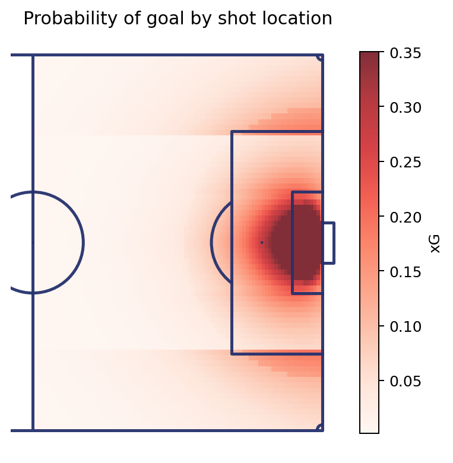
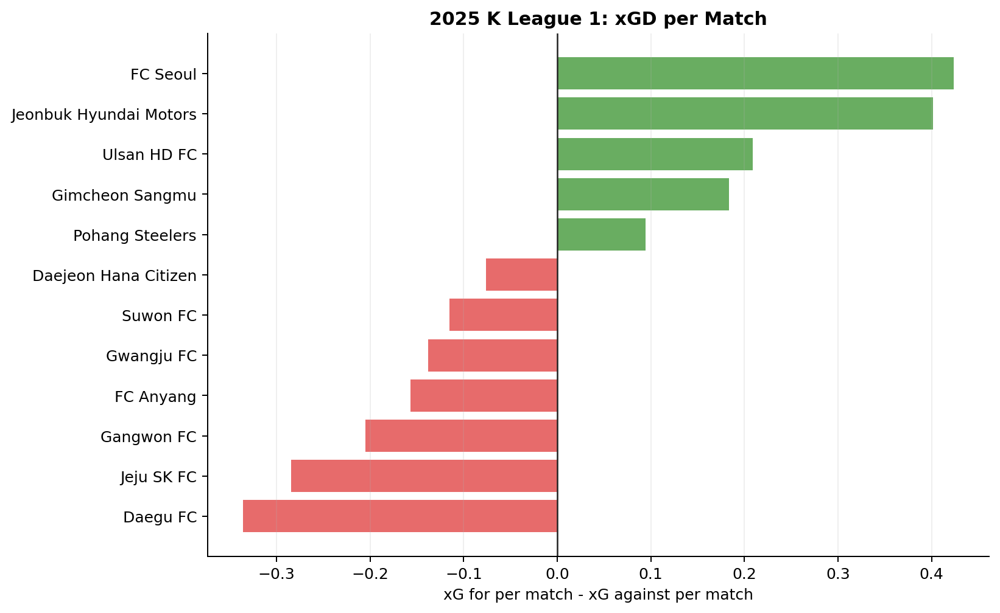
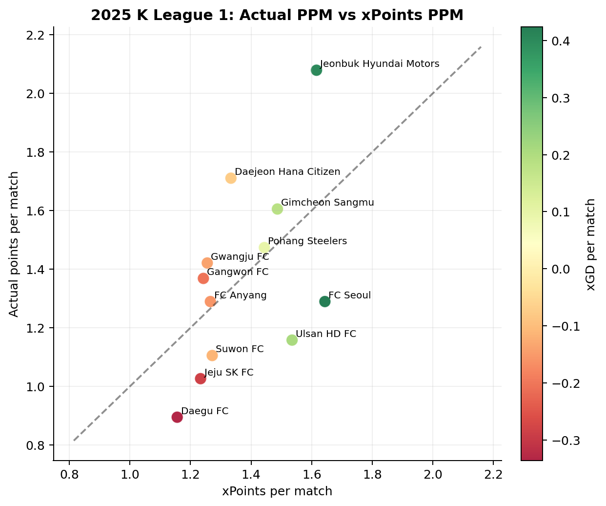
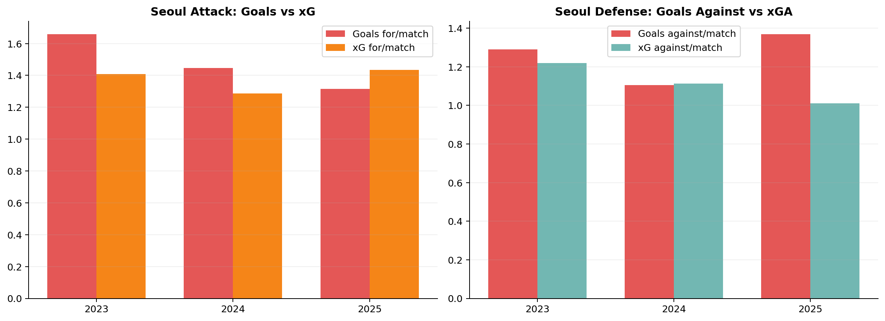
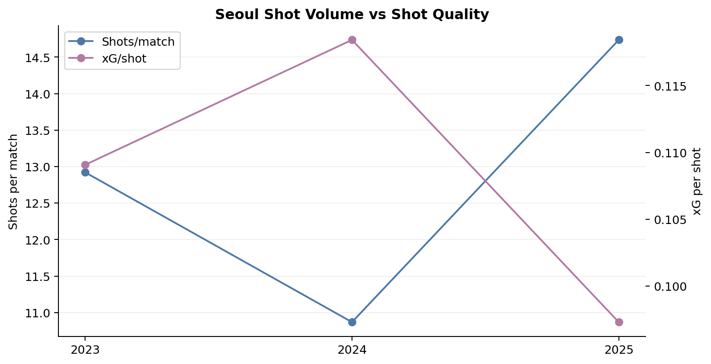
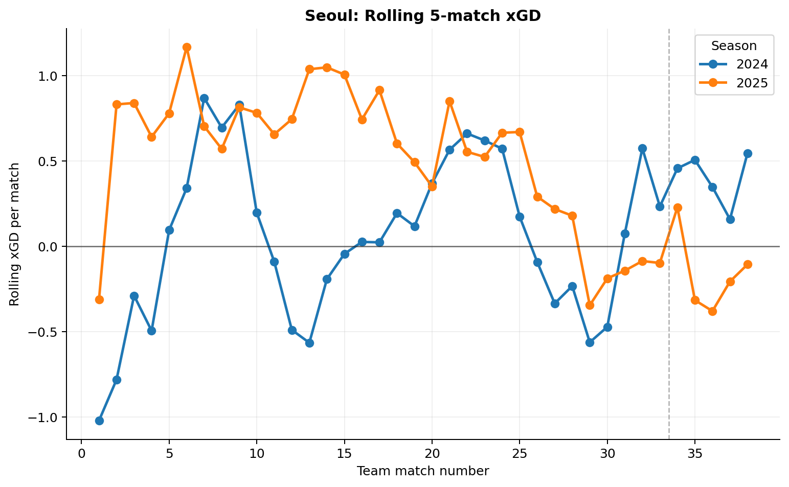
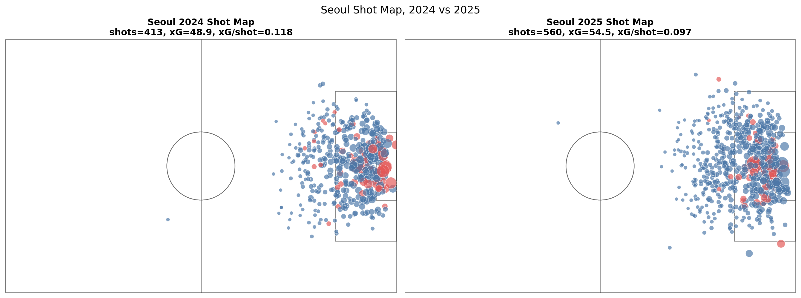
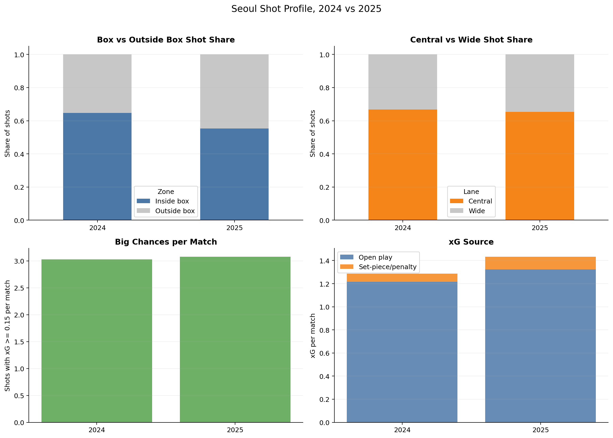
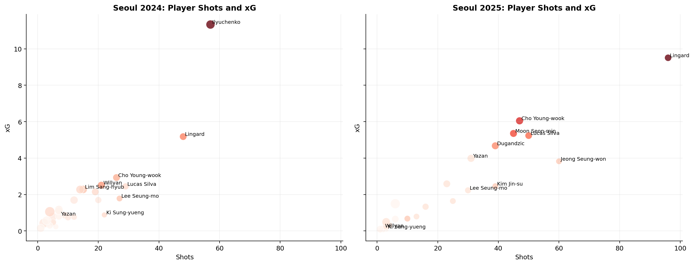
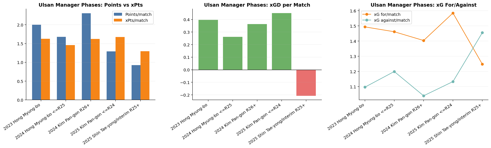

2024년 FC서울은 김기동 감독을 선임했습니다.
기대는 컸습니다. 포항에서 김기동 감독은 제한된 자원 안에서도 구조적인 팀을 만들었고, 서울이 원했던 것도 바로 그런 안정적인 경기력이었습니다.
첫해 결과는 나쁘지 않았습니다. 서울은 2024시즌 파이널A에 진입했고, 4위·승점 58점으로 시즌을 마쳤습니다. 순위표만 보면 이야기는 단순했습니다. 좋은 감독이 왔고, 서울은 좋아졌습니다.
하지만 2025년의 흐름은 이 판단을 다시 어렵게 만들었습니다. 같은 감독, 같은 방향성 위에서 출발한 두 번째 시즌이었지만 결과는 기대만큼 따라오지 않았습니다.
그렇다면 질문은 다시 바뀝니다.
서울은 정말 좋아지고 있었을까요? 2024년의 좋은 성적은 실제 경기력 위에 있었을까요? 2025년의 흔들림은 정말 경기력의 후퇴였을까요?
이 질문에 답하기 위해 이번 글에서는 xG(Expected Goals, 기대득점)를 사용합니다.
xG는 슈팅이 득점으로 이어질 가능성을 수치화한 지표입니다. 득점이 결과를 보여준다면, xG는 그 전에 만들어진 찬스의 질을 보여줍니다.
이번 글에서 xG는 정답이 아니라 서울의 공격을 다시 나눠보는 도구입니다. 서울은 좋은 찬스를 만들고 있었는지, 그 찬스들은 실제 득점으로 이어졌는지, 그리고 김기동 체제의 공격은 2024년과 2025년 사이에 어떻게 달라졌는지를 살펴보겠습니다.
xG란 무엇인가
xG는 슈팅의 질을 평가하는 지표입니다.
축구 기록에서 슈팅은 모두 같은 “슈팅 1개”로 남습니다. 하지만 실제로는 그렇지 않습니다. 골문 바로 앞에서 시도한 슈팅과 박스 밖 먼 거리에서 때린 슈팅은 득점 가능성이 전혀 다릅니다.
xG는 이 차이를 수치로 표현합니다.
예를 들어 xG 0.10의 슈팅은 비슷한 조건에서 평균적으로 10번 중 1번 정도 득점되는 기회입니다. xG 0.50이라면 10번 중 5번 정도 득점이 기대되는 좋은 기회입니다.

그렇다면 이 숫자는 어떻게 계산될까요?
xG 모델은 과거의 수많은 슈팅 데이터를 바탕으로 만들어집니다. 각 슈팅이 실제로 득점이 되었는지, 그리고 그 슈팅이 어떤 상황에서 나왔는지를 함께 학습합니다. 이후 새로운 슈팅이 들어오면 과거에 비슷한 조건의 슈팅들이 얼마나 자주 골로 이어졌는지를 바탕으로 득점 확률을 추정합니다.
모델이 참고하는 요소는 보통 다음과 같습니다.
- 슈팅 위치
- 골문과의 거리
- 슈팅 각도
- 슈팅 부위
- 패스 유형
- 오픈플레이/세트피스 여부
- 수비 압박 여부
예를 들어 같은 박스 안 슈팅이라도 정면에서 여유 있게 때린 슈팅과 좁은 각도에서 수비수 압박을 받으며 때린 슈팅은 다른 xG 값을 갖습니다.
한 팀의 경기 xG는 그 팀이 시도한 모든 슈팅의 xG 값을 더해 계산합니다. 즉 xG가 높다는 것은 단순히 슈팅을 많이 했다는 뜻이 아니라, 득점 가능성이 높은 찬스를 많이 만들었다는 뜻에 가깝습니다.
물론 xG가 모든 것을 설명하지는 않습니다. 좋은 공격수는 낮은 xG의 슈팅도 골로 만들 수 있고, 좋은 골키퍼는 높은 xG 상황에서도 실점을 막을 수 있습니다. 또 모든 xG 모델이 같은 방식으로 계산되는 것도 아닙니다.
그래도 xG는 팀의 공격을 볼 때 중요한 출발점이 됩니다. 득점은 결과를 보여주지만, xG는 그 결과가 나오기 전 팀이 어떤 기회를 만들었는지 보여주기 때문입니다.
xG로 다시 보는 2025 K리그1
서울을 보기 전에 먼저 리그 전체를 xG 기준으로 다시 살펴보겠습니다.
순위표는 승점의 결과를 보여줍니다. 하지만 xG는 각 팀이 얼마나 좋은 찬스를 만들었고, 반대로 얼마나 좋은 찬스를 허용했는지를 보여줍니다. 그래서 두 숫자를 함께 보면 현재 순위가 실제 경기력과 얼마나 같은 방향에 있는지 확인할 수 있습니다.
여기서 볼 핵심 지표는 세 가지입니다.
- xG: 한 팀이 만든 슈팅의 기대득점 합계
- xGA: 상대에게 허용한 슈팅의 기대득점 합계
- xGD: xG에서 xGA를 뺀 값으로, 공격과 수비를 함께 반영한 기회 차이
xGD가 높다는 것은 단순히 공격을 잘했다는 뜻만은 아닙니다. 좋은 찬스를 만들면서 동시에 상대에게 좋은 찬스를 적게 허용했다는 의미입니다. 그래서 한 팀의 전체적인 경기력을 볼 때 가장 먼저 확인할 만한 지표입니다.
다만 축구의 순위는 득실 차이가 아니라 경기별 승점으로 정해집니다. 그래서 xGD와 함께 xPoints도 보겠습니다. xPoints는 각 경기의 xG를 바탕으로 “이 경기력이라면 몇 점 정도를 기대할 수 있었는가”를 보여줍니다.
즉 xGD는 경기력의 방향을, xPoints는 그 경기력이 승점으로 환산됐을 때의 기대값을 보여줍니다.
| 실제 순위 | 팀 | 승점 | xPoints | 전체 xPoints 순위 | xGD/경기 | 전체 xGD 순위 |
|---|---|---|---|---|---|---|
| 1 | 전북 | 79 | 61.4 | 2 | +0.402 | 2 |
| 2 | 대전 | 65 | 50.7 | 6 | -0.076 | 6 |
| 3 | 김천 | 61 | 56.5 | 4 | +0.183 | 4 |
| 4 | 포항 | 56 | 54.9 | 5 | +0.094 | 5 |
| 5 | 강원 | 52 | 47.2 | 10 | -0.205 | 10 |
| 6 | 서울 | 49 | 62.5 | 1 | +0.424 | 1 |
| 7 | 광주 | 54 | 47.7 | 9 | -0.138 | 8 |
| 8 | 안양 | 49 | 48.1 | 8 | -0.157 | 9 |
| 9 | 울산 | 44 | 58.3 | 3 | +0.209 | 3 |
| 10 | 수원FC | 42 | 48.3 | 7 | -0.115 | 7 |
| 11 | 제주 | 39 | 46.9 | 11 | -0.285 | 11 |
| 12 | 대구 | 34 | 43.9 | 12 | -0.336 | 12 |


가장 먼저 눈에 띄는 팀은 서울입니다.
서울은 실제 순위 6위였지만, 전체 xPoints와 xGD는 모두 리그 1위였습니다. 순위표만 보면 중위권 팀이지만, xG는 서울이 리그에서 가장 좋은 수준의 기회를 만들고 억제한 팀이었다고 평가합니다.
두 번째 그래프에서도 서울은 대각선 아래에 크게 위치합니다. 실제 승점은 49점으로 모델이 기대한 약 62.5점보다 13.5점 적었습니다. 이는 좋은 기저 경기력을 실제 결과로 충분히 전환하지 못했다는 뜻입니다.
반대로 전북은 실제 1위였으며 전체 xPoints와 xGD는 모두 2위였습니다. 경기 내용도 우승권이었지만 실제 승점은 기대승점보다 약 17.6점 많았습니다.
대전은 실제 2위였지만 전체 xPoints와 xGD는 모두 6위였습니다. 실제 결과가 기저 경기력을 크게 웃돈 팀으로 볼 수 있습니다. 김천은 실제 3위, 전체 xPoints와 xGD 모두 4위로 순위표와 경기력 지표가 비교적 비슷했습니다.
따라서 서울의 2025년을 단순히 “경기력이 나빴던 시즌”으로 보기는 어렵습니다. 오히려 리그 최고 수준의 기저 경기력을 기록하고도 이를 승점과 순위로 연결하지 못한 시즌에 가깝습니다.
서울의 xG는 어떻게 만들어졌을까
앞에서 본 것처럼 서울은 실제 순위보다 xG 기준에서 더 높게 평가된 팀이었습니다.
그렇다면 이제 봐야 할 것은 이 차이가 어디에서 나왔는지입니다. 공격에서 기대보다 손해를 본 것인지, 수비에서 기대보다 많은 실점을 허용한 것인지 나눠볼 필요가 있습니다.
먼저 득점과 xG, 실점과 xGA를 나란히 보겠습니다.

2024년 서울은 xG보다 많은 골을 넣었습니다. 만든 찬스의 기대값보다 약 6골 많은 결과를 얻은 시즌이었습니다.
반면 2025년에는 약 54.5 xG에서 50골을 기록했습니다. 기대치보다 약 4.5골 적게 득점했기 때문에 만든 xG만큼 득점했다고 보기는 어렵지만, 공격의 결정력이 완전히 무너진 수준도 아니었습니다.
더 큰 차이는 수비 쪽에서 나옵니다.
2025년 서울의 xGA는 약 38.4로 2024년보다 낮아졌지만, 실제 실점은 42골에서 52골로 늘었습니다. 허용한 찬스의 기대값보다 약 13.6골을 더 실점한 것입니다.
즉 서울은 지속적으로 좋은 찬스를 많이 허용한 팀이라기보다, 허용한 찬스의 기대값에 비해 지나치게 많은 실점을 기록한 팀에 가깝습니다. 공격의 기대득점 미달도 존재했지만, 2025년 성적 부진을 설명하는 더 큰 차이는 수비에서 발생했습니다.
그렇다면 공격의 슈팅 구조는 어떻게 달라졌을까요?

2025년 서울은 슈팅 수가 크게 늘었습니다. 하지만 xG per shot은 떨어졌습니다.
더 많이 때렸지만 더 좋은 위치에서 때린 것은 아니었습니다. 공격의 양은 늘었지만 한 번의 슈팅이 가진 평균적인 위협도는 낮아졌습니다.
정리하면 2025년 서울은 공격에서 완전히 무너진 팀은 아니었습니다. 총 xG는 증가했지만 기대치보다 득점이 적었고 슈팅 품질은 낮아졌습니다. 수비에서는 xGA보다 훨씬 많은 실점을 허용했습니다. 그래서 서울은 xG 기준으로는 상위권에 있었지만 실제 순위표에서는 그만큼 올라가지 못했습니다.
Rolling xGD: 서울은 언제부터 달라졌을까
시즌 전체 숫자는 평균을 보여줍니다. 하지만 팀의 변화는 평균 안에 숨어 있을 때가 많습니다.
그래서 이번에는 서울의 경기별 흐름을 보기 위해 5경기 Rolling xGD를 살펴보겠습니다. Rolling xGD는 최근 5경기의 xG Difference를 평균낸 값입니다.
값이 0보다 높으면 최근 5경기 동안 서울이 xG 기준으로 상대보다 우위에 있었다는 뜻이고, 0보다 낮으면 반대로 상대가 더 좋은 xG 흐름을 만들었다는 의미입니다.

그래프에서 가장 먼저 보이는 것은 출발점의 차이입니다.
2024년 서울은 시즌 초반 Rolling xGD가 크게 음수였습니다. 하지만 5경기 이후 점차 개선됐고, 중반 이후에는 0을 넘는 구간이 늘어났습니다. 시즌을 치르면서 경기 내용이 좋아진 흐름이었습니다.
2025년은 달랐습니다. 서울은 시즌 초반부터 빠르게 양수 구간으로 올라섰고, 15경기 전후에는 Rolling xGD가 경기당 1을 넘는 강한 구간도 나타났습니다.
문제는 후반부였습니다. 26경기 이후 흐름이 꺾였고, 정규리그 막판과 파이널 라운드 후반에는 다시 음수를 기록했습니다.
정리하면 2025년 서울은 처음부터 경기력이 나빴던 팀이 아닙니다. 오히려 시즌 대부분에서 2024년보다 안정적으로 좋은 기회를 만들고 억제했습니다. 그러나 이를 승점으로 충분히 전환하지 못했고, 정규리그 막판부터 경기 내용까지 하락하면서 시즌을 좋게 마무리하지 못했습니다.
슈팅맵으로 본 서울의 변화
이제 서울의 슈팅맵을 살펴보겠습니다.
가장 먼저 보이는 변화는 슈팅 수의 증가입니다.

서울은 2024년 413개의 슈팅으로 48.9 xG를 만들었지만, 2025년에는 560개의 슈팅으로 54.5 xG를 기록했습니다.
슈팅과 총 xG가 모두 증가했지만 증가 폭은 달랐습니다. 슈팅은 약 35.6% 늘어난 반면 총 xG는 약 11.4% 증가하는 데 그쳤습니다. 그 결과 슈팅당 xG는 0.118에서 0.097로 약 17.8% 감소했습니다.
즉 2025년 서울은 더 많이 슈팅하고 더 많은 총 xG를 만들었지만, 한 번의 슈팅이 가진 평균적인 위협도는 낮아졌습니다.

슈팅 위치에서도 이러한 변화가 나타납니다. 박스 안 슈팅 비율은 2024년 64.6%에서 2025년 55.4%로 크게 낮아졌습니다. 중앙 지역 슈팅 비율도 66.8%에서 65.4%로 소폭 감소했습니다. 2025년에는 박스 바깥을 포함한 다양한 위치에서 슈팅이 늘었지만, 더 좋은 위치에서의 슈팅이 같은 비율로 증가하지는 않았습니다.
이 분석에서 고품질 기회로 정의한 xG 0.15 이상 슈팅은 115회에서 117회로 거의 변하지 않았습니다. 전체 슈팅은 147회 증가했지만 결정적인 기회의 수는 사실상 유지된 것입니다.
공격 유형별로는 오픈플레이 xG가 46.2에서 50.3으로 증가했고, 세트피스와 페널티 xG도 2.7에서 4.2로 늘었습니다. 따라서 특정 공격 유형이 약해졌다기보다 추가된 슈팅 상당수가 낮은 확률의 기회였다고 해석하는 것이 적절합니다.
정리하면 서울은 공격을 만들지 못한 팀이 아니었습니다. 공격 횟수와 총 기대득점은 모두 증가했습니다. 다만 고품질 기회를 더 많이 만드는 방식보다 낮은 품질의 슈팅을 크게 늘려 전체 xG를 쌓는 공격에 가까워졌습니다.
누가 서울의 xG를 만들었나

2024년 공격의 가장 뚜렷한 중심축은 일류첸코였습니다. 57개의 슈팅으로 11.33 xG와 14골을 기록했고, 팀 전체 xG의 약 23.2%를 혼자 담당했습니다. 린가드가 48개 슈팅과 5.18 xG로 뒤를 이었고 조영욱, 윌리안, 루카스 등이 보조하는 구조였습니다.
2025년에는 공격의 중심이 린가드로 이동했습니다. 린가드는 96개의 슈팅으로 9.51 xG와 10골을 기록했습니다. 조영욱은 6.05 xG, 문선민은 5.35 xG, 루카스는 5.23 xG, 둑스는 4.68 xG를 기록했습니다.
최상위 한 선수의 팀 xG 비중은 23.2%에서 17.4%로 낮아졌습니다. 한 명의 중앙 공격수에게 집중되던 구조는 약해졌다고 볼 수 있습니다.
다만 공격이 선수단 전체에 고르게 분산된 것은 아닙니다. 상위 5명의 xG 비중은 오히려 49.9%에서 56.6%로 증가했고 전체 집중도도 거의 변하지 않았습니다. 한 명에게 집중되던 공격이 여러 핵심 선수에게 나뉘는 형태로 바뀐 것입니다.
2025년 최다 슈팅을 기록한 린가드의 슈팅당 xG는 약 0.099로, 2024년 일류첸코의 0.199보다 크게 낮았습니다. 마무리 역할은 여러 선수에게 나뉘었지만 확실한 득점원이 반복해서 고품질 기회를 얻는 구조는 약해졌습니다.
비교 사례: 울산은 어떻게 달라졌나
서울이 좋은 xG 구조를 실제 결과로 연결하지 못한 팀이었다면, 울산은 시즌 도중 기저 경기력 자체가 어떻게 달라졌는지를 보여주는 비교 사례입니다.

2023년 홍명보 감독 구간에서 울산은 경기당 약 +0.40 xGD를 기록했습니다. 2024년에도 홍명보 감독 구간은 +0.26, 김판곤 감독 부임 이후는 +0.36으로 모든 구간에서 공격 xG가 수비 xGA보다 높았습니다.
이 흐름은 2025년 초반에도 이어졌습니다. 김판곤 감독이 지휘한 1~24라운드의 경기당 xG는 약 1.59, xGA는 1.13, xGD는 +0.45였습니다. 분석한 구간 가운데 가장 높은 xGD였습니다.
뚜렷한 변화는 25라운드 이후에 나타났습니다. 신태용 감독 및 감독대행 구간에서 경기당 xG는 1.59에서 1.25로 감소했고 xGA는 1.13에서 1.46으로 증가했습니다. 경기당 xGD는 +0.45에서 -0.21로 급격히 떨어졌습니다.
서울은 시즌 전체의 좋은 기저 경기력이 결과로 이어지지 않았지만, 울산의 후반기는 공격과 수비 지표가 동시에 악화됐습니다. 서울은 경기력에 비해 결과가 따라오지 않은 팀, 울산의 후반기는 경기력의 기반 자체가 흔들린 구간으로 구분할 수 있습니다.
감독 구간 비교는 인과관계를 뜻하지 않습니다. 일정, 상대 강도, 선수 구성과 부상 등 다른 요인이 함께 포함된 기술적 비교입니다.
결론: 그래서 김기동의 서울은 좋아지고 있었나
여기까지 보면 2025년 서울을 단순한 실패로만 보기는 어렵습니다.
순위표는 아쉬웠지만 xG 기준의 서울은 리그 최상위권에 가까웠습니다. 전체 xPoints와 xGD가 모두 1위였고, 시즌 초중반 Rolling xGD 흐름도 좋았습니다. 좋은 찬스를 만들고 상대에게 좋은 찬스를 덜 내주는 구조는 상당 부분 작동하고 있었습니다.
문제는 그 내용이 결과로 충분히 이어지지 않았다는 점입니다. 공격에서는 기대치보다 약 4.5골 적게 넣었고, 수비에서는 xGA보다 약 13.6골을 더 실점했습니다.
그래서 2025년 서울은 “못한 팀”이라기보다 좋은 경기력을 승점으로 바꾸지 못한 팀에 가까웠습니다.
이 해석은 2026년의 서울을 볼 때도 중요합니다. 2026년 5월 5일, 12경기 기준 서울은 26점으로 1위를 기록하고 있습니다. 모델의 xPoints는 약 18.9점, xGD는 리그 4위로 실제 성적만큼 압도적이지는 않지만, 양의 xG 구조를 유지하면서 결정력과 실점 억제 효율이 크게 좋아진 모습입니다.
아직 시즌 초반이기 때문에 지금의 흐름이 계속될지는 더 지켜봐야 합니다. 다만 현재의 반등은 2025년과 달리 경기 내용이 실제 승점으로 연결되고 있다는 점에서 분명한 차이가 있습니다.
분석에 대한 질문이나 협업 제안은 thedatadribblers@gmail.com으로 보내 주세요.
코드 구현 이민호
본문 작성 이민호
검수 고상기 교수